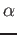

Next: 3.6 Socket interface with i-PI
Up: 3 Using PWscf
Previous: 3.4 Optimization and dynamics
Contents
Subsections
3.5 Direct interface with CASINO
PWscf supports the Quantum Monte Carlo program CASINO directly.
For more information on the CASINO code,
see https://vallico.net/casinoqmc.
CASINO may take the output of PWSCF and
'improve it' giving considerably more accurate total energies and other
quantities than DFT is capable of.
PWscf users wishing to learn how to use CASINO may like to attend one
of the annual CASINO summer schools in Mike Towler's "Apuan Alps Centre
for Physics" in Tuscany, Italy. More information can be found at http://www.vallico.net/tti/tti.html
The interface between PWscf and CASINO is provided through a file with a
standard format containing geometry, basis set, and orbital coefficients, which
PWscf will produce on demand. For SCF calculations, the name of this file may
be pwfn.data, bwfn.data or bwfn.data.b1 depending on user requests (see below).
If the files are produced from an MD run, the files have a suffix .0001, .0002,
.0003 etc. corresponding to the sequence of timesteps.
CASINO support is implemented by three routines in the PW directory of the
espresso distribution:
- pw2casino.f90 : the main routine
- pw2casino_write.f90 : writes the CASINO xwfn.data file in various formats
- pw2blip.f90 : does the plane-wave to blip conversion, if requested
Relevant behavior of PWscf may be modified through an optional auxiliary input
file, named pw2casino.dat (see below).
Use the '-pw2casino' option when invoking pw.x, e.g.:
pw.x -pw2casino < input_file > output_file
The xfwn.data file will then be generated automatically.
PWscf is capable of doing the plane wave to blip conversion directly (the
'blip' utility provided in the CASINO distribution is not required) and so by
default, PWscf produces the 'binary blip wave function' file bwfn.data.b1
Various options may be modified by providing a file pw2casino.dat in outdir
with the following format:
&inputpp
blip_convert=.true.
blip_binary=.true.
blip_single_prec=.false.
blip_multiplicity=1.d0
n_points_for_test=0
/
Some or all of the 5 keywords may be provided, in any order. The default
values are as given above (and these are used if the pw2casino.dat file is
not present.
The meanings of the keywords are as follows:
- blip_convert
- : reexpand the converged plane-wave orbitals in localized blip
functions prior to writing the CASINO wave function file. This is almost
always done, since wave functions expanded in blips are considerably more
efficient in quantum Monte Carlo calculations. If blip_convert=.false.
a pwfn.data file is produced (orbitals expanded in plane waves); if
blip_convert=.true., either a bwfn.data file or a bwfn.data.b1 file is
produced, depending on the value of blip_binary (see below).
- blip_binary
- : if true, and if blip_convert is also true, write the blip wave function
as an unformatted binary bwfn.data.b1 file. This is much smaller than
the formatted bwfn.data file, but is not generally portable across
all machines.
- blip_single_prec
- : if .false. the orbital coefficients in bwfn.data(.b1) are written out in double
precision; if the user runs into hardware limits blip_single_prec can be
set to .true. in which case the coefficients are written in single
precision, reducing the memory and disk requirements at the cost of a small
amount of accuracy..
- blip_multiplicity
- : the quality of the blip expansion (i.e., the fineness of the blip grid) can be
improved by increasing the grid multiplicity parameter given by this keyword.
Increasing the grid multiplicity results in a greater number of blip
coefficients and therefore larger memory requirements and file size, but the
CPU time should be unchanged. For very accurate work, one may want to
experiment with grid multiplicity larger that 1.0. Note, however, that it
might be more efficient to keep the grid multiplicity to 1.0 and increase the
plane wave cutoff instead.
- n_points_for_test
- : if this is set to a positive integer greater than zero, PWscf will sample
the wave function, the Laplacian and the gradient at a large number of
random points in the simulation cell and compute the overlap of the
blip orbitals with the original plane-wave orbitals:
α = 
The closer α is to 1, the better the blip representation. By increasing
blip_multiplicity, or by increasing the plane-wave cutoff, one ought to be
able to make α as close to 1 as desired. The number of random points used
is given by n_points_for_test.
Finally, note that DFT trial wave functions produced by PWSCF
must be generated using the same pseudopotential as in the subsequent QMC
calculation. This requires the use of tools to switch between the different
file formats used by the two codes.
CASINO uses the `CASINO tabulated format', PWSCF
uses the UPF format. See upflib/README.md for instructions on how
to convert between these formats.
An alternative converter `casinogon' is included in the CASINO distribution which produces the deprecated GON format but which can be useful when using non-standard grids.
Next: 3.6 Socket interface with i-PI
Up: 3 Using PWscf
Previous: 3.4 Optimization and dynamics
Contents